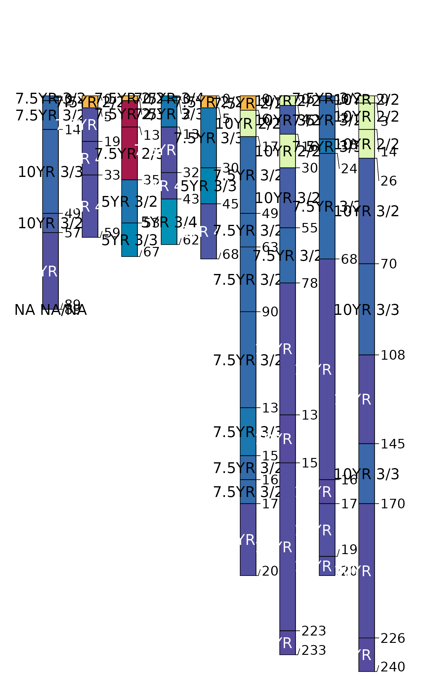
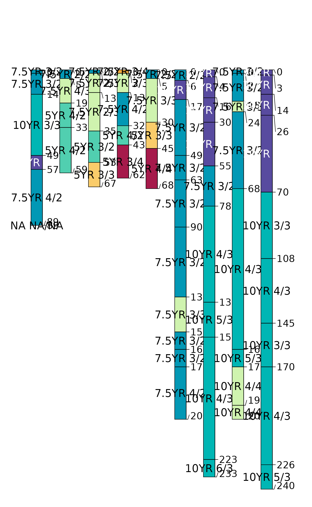
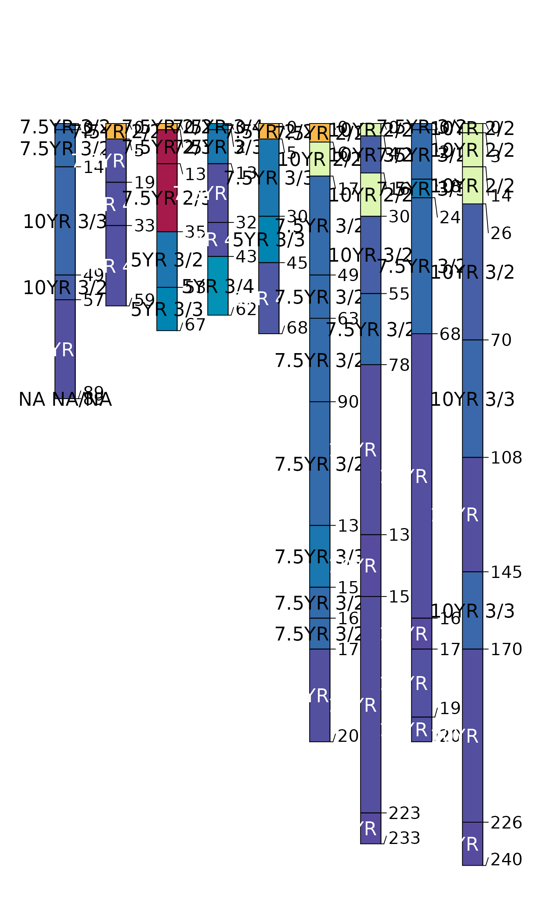
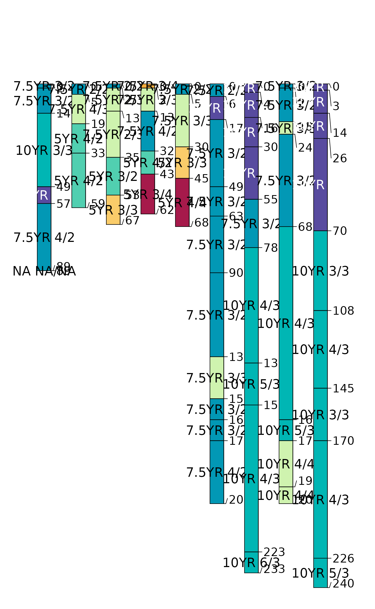

Calculate basic horizon-level color indices for a SoilProfileCollection. Basic indices do not require aggregation over the whole profile or comparison to a "reference" (e.g. parent material) color. Includes Hurst (1977) Redness Index, Barron-Torrent Redness Index (1986) and Buntley-Westin Index (1965). This is a wrapper method around several horizon-level indices. See the individual functions for more details.
horizonColorIndices(p, hue = "m_hue", value = "m_value", chroma = "m_chroma")Arguments
- p
A SoilProfileCollection
- hue
Column name containing moist hue; default: "m_hue"
- value
Column name containing moist value; default: "m_value"
- chroma
Column name containing moist chroma; default: "m_chroma"
Value
A data.frame containing unique pedon and horizon IDs and horizon-level color indices.
Examples
data(sp1)
# promote sp1 data to SoilProfileCollection
depths(sp1) <- id ~ top + bottom
# move site data
site(sp1) <- ~ group
# compute indices
# merged into `sp1` with left-join on hzidname(sp1)
horizons(sp1) <- horizonColorIndices(sp1, hue="hue", value="value", chroma="chroma")
# visualize
par(mar=c(0, 1, 3, 1))
plot(sp1, color='hurst_redness')
 plot(sp1, color='barron_torrent_redness')

plot(sp1, color='buntley_westin')

plot(sp1, color='barron_torrent_redness')

plot(sp1, color='buntley_westin')
